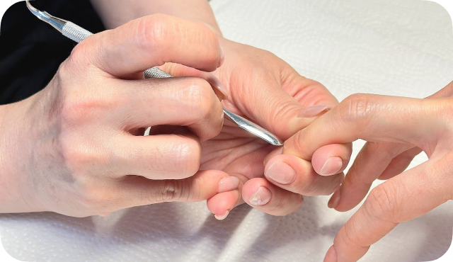
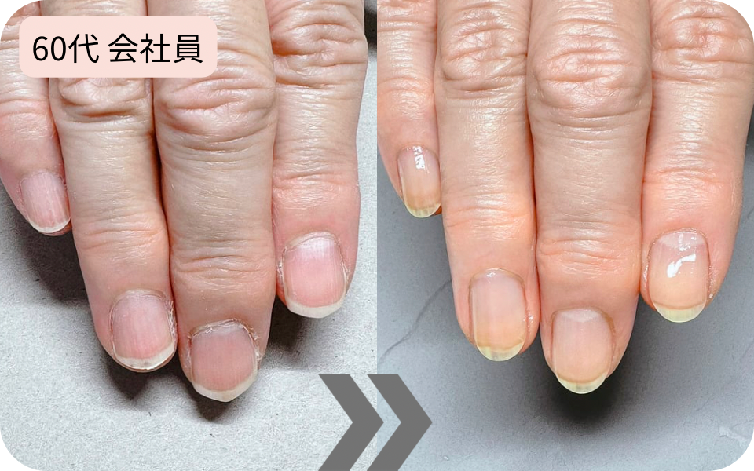
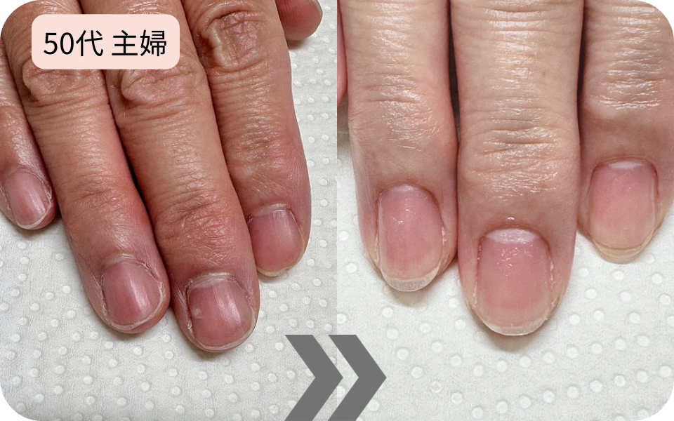
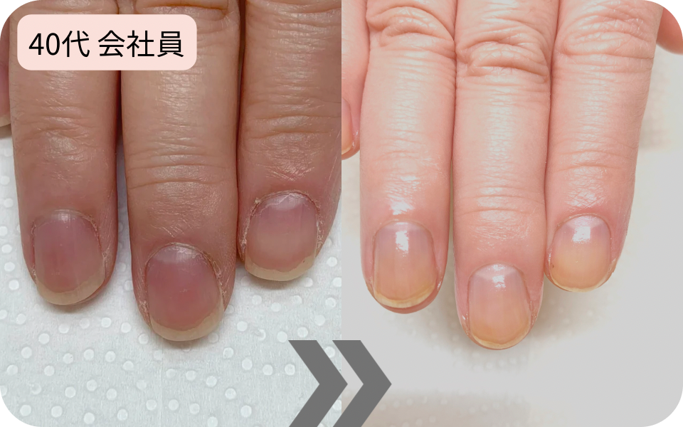
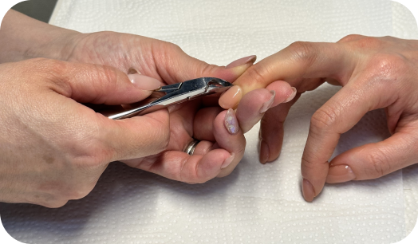
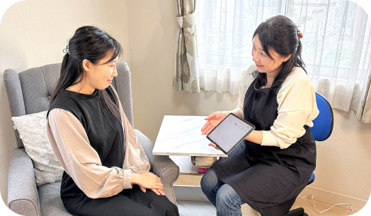
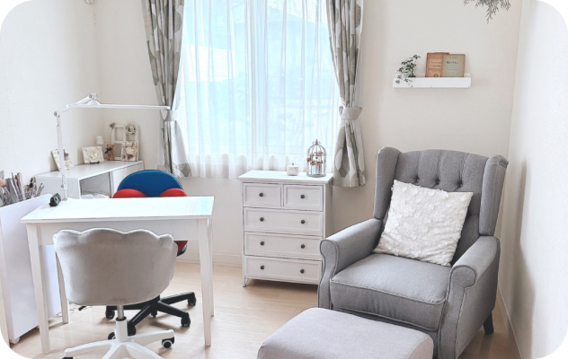
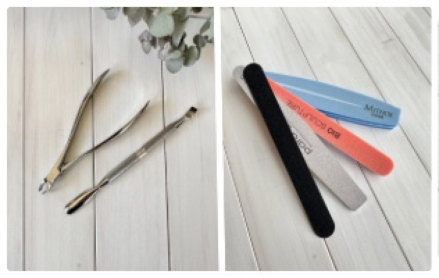
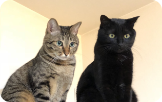

爪の悩みは
3ヶ月で
自信に変わる
50代の爪トラブルを解決する
元銀行員の堅実ネイルケア
こんなことで
お悩み ではありませんか？
CASE1
ネイルサロンなんて
爪のキレイな人が行くところでしょ。
CASE2
丸くて小さくて弱い爪…
生まれつきでどうしようもない。
CASE3
手はカサカサでささくれ
折れたり割れたりボロボロ。
CASE4
50を過ぎて爪の縦筋が気になる
手に年を感じるようになった…
CASE5
爪切りで深爪になった。
深爪が痛い…
これまで
✔️ 効果があまり見られない
✔️ 爪の形は生まれつきだから諦める
✔️ 隠すためにマニキュアを塗る
✔️ ハンドクリームを塗ってみる
そんなお悩みに
爪を育てる「爪活」 を
おすすめします
爪活とは・・爪も自分も活き活きと
爪を育てる活動のこと
Before / After
（3週間おき3回）
（3週間おき3回）



施術の流れ


メニュー
ハンドケア
フットケア
選ばれる理由
02 お手入れにこだわっています
ほとんどのネイルサロンのお手入れはジェルネイルをする上での工程の一部に過ぎません。スピードを重視するという観点からお手入れは簡単に済ませるというところが大半だと思います。当店では爪本来の美しさを取り戻すべく丁寧に爪の生え際を器具を使ってマッサージ効果のある施術や甘皮処理を一本一本丁寧に行います。
03 アフターフォローいたします
当店では初回一度だけのネイル施術だけでなくお客様と一緒に爪の改善に向けて取組むためにアフターフォローを徹底しています。ホームケアの仕方、手の所作のアドバイスやお手入れ来店周期のご提案などお客様一人一人に合ったケアをしていきます。
お客様の声
プロフィール
Q& A
Q. 爪は切っていった方がいいですか？
A. そのままの状態でお越しください。お客様に適切な長さや形に整えいたします。
Q. ハンドクリームを塗っていった方がいいですか？
A. お客様の手や爪の状態が見たいので素の状態でお越しください。
Q. 爪を育てるネイルケアって何ですか？
A. 爪表面の処理だけでなく薄い膜のような角質や甘皮を除去します。またネイル専用器具を使ってのケアをすることにより血行が促進されます。そのため爪が健やかに育ちやすくなります。一本一本丁寧にケアをしていきます。
Q. どのくらいの間隔で通えばいいですか？
A. 人それぞれ爪まわりの状態が異なります。当店ではじっくりカウンセリングをしその方に合った施術方法や来店間隔をお伝えしています。個人によって異なりますが目安として２～３週間おき程度となります。
Q. お支払い方法について
A. 現在のところ現金のみとなっております。
アクセス
当サロンに
満足頂けない方
留意事項
フォトギャラリー

サロン

お客様と私を繋ぐアイテム
